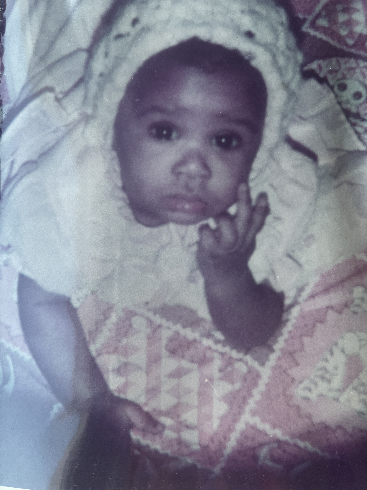
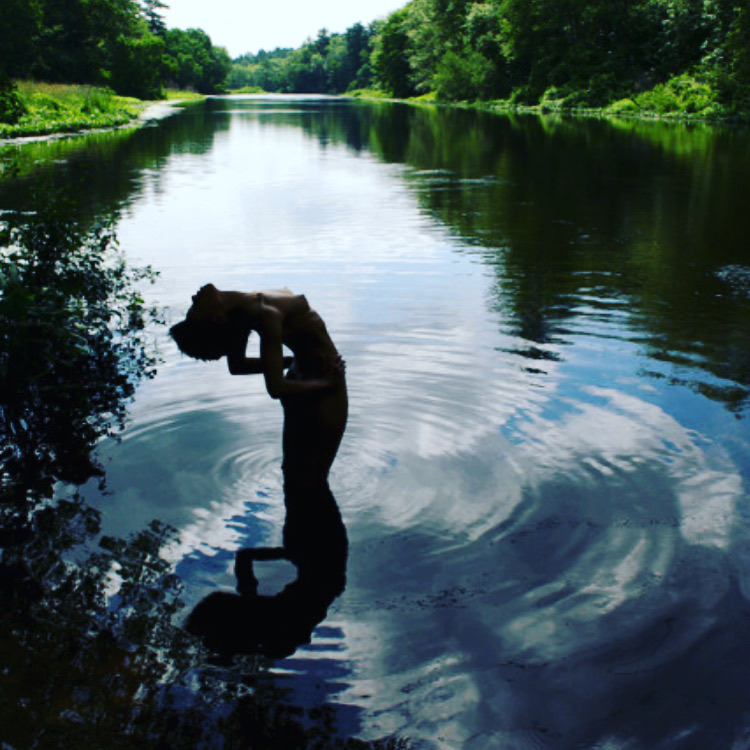

Problem Statement

Our current culture is mentally ill because we are corrupted by toxicity. Our infrastructures hurt. Walking on concrete hurts. Lack of consistent, free, and easeful access to clean drinking water hurts. Indoor environments lacking operable windows for perpetually highly oxygenated air harm us. Educational systems and work environments which require postural misalignments through prolonged sitting and use of mis-designed consoles for the human body normalize physical harm as essential to living—hurt. Sonic environments of loud sirens, high pitched beeping sounds, screeching railroad trains and loud power tool sounds hurt.
The infrastructures which make the quality of our daily lives such as sidewalks, roads, schools, workplaces, water dispensation and emergency/alarm signaling systems—have been designed around mechanical efficiency, not biological integrity–to profit at the expense of human health. These environments injure spines, compress lungs, distort gait, dysregulate nervous systems, and contribute to climate emergency through necessitating toxic materials.
This is not accidental. It reflects an inherited design paradigm rooted in eugenics influenced capitalistic notions of human expendability which normalizes harm. The result is a civilization whose built environments reproduce trauma at every level, from cellular to planetary scales.
Grounds 4 Peace exists to reverse this logic by developing systems designed with the healthy body as the fundamental priority. G4P's aim is to restore somatic coherence at the infrastructural level, to upgrade human settlements, customs, tools, and materials for life support rather than degradation.
Mission

Grounds 4 Peace is a transdisciplinary humanitarian and technological initiative for upgrading public infrastructure to honor human physical needs. Disrespect of the body is not incidental. It is woven into the fabric of a society shaped by settler violence of genocide, trafficking, torture, forced relocation, tearing apart of families, forced labor and normalization of harm. Abuse is etched into conditions of everyday life, and therefore affects our neurological patterns in North America and globally. Prolonged abuse causes illness, relational abuse, inner conflict and war.
Yet we are humanity and must steer our work with the humanitarian directive to consider our physical needs and build our world to be good for us and not bad for us. Grounds 4 Peace is intended to facilitate the transitional upgrade of built environments, agriculture, education, public access and environmental remediation. Our work is to bridge embodiment with technological innovation for the development of regenerative urban grounds materials, trauma-free emergency and safety signaling, and self-generating water stations as primary basics for public infrastructure.
By aligning humanitarian ethics informed by somatics with material science, engineering and design and botany through the implementation of multidisciplinary arts processes we facilitate building better for biological humans.
Transdisciplinary Approach
Translate principles of embodied intelligence into material innovation at the intersection of somatics, physics, design, engineering and ecology.
- Somatic Intelligence: Informed by movement, injury prevention and biomechanical needs; human bodies sense, feed back information, and must guide design. We must derive specifications for materials and spatial forms that sustain health rather than disfigure us.
- Quantum & Nano Inquiry: Instead of obliging scientists and engineers to design machines for mass human destruction, as they have been forced into by societies who value military might above public well being, G4P will collaborate with scientists and engineers utilizing current knowledge of matter at micro and sub-atomic levels to identify possibilities for water accessibility and regenerative materials: self sustaining and repairing unmetered watering stations, water-conductive composites, shock-absorbing stimulus-responsive biomaterials which adjust to human needs such as an elevator button adjustig upward or downward for the comfort of the person reaching towards it.
- Ecological Design: Translating micro-level coherence into macro-level infrastructure: roads, buildings, paths for human locomotion, schools, workplaces, and soundscapes integrating hydrological balance, soil health, consoles and transport mechanisms which support not repetitive stress injuries, neurological trauma patterns and diseases resulting from toxic environmental stressors; but the integrity of human postural and physiologic health.
- Humanitarian Alignment: We hold technology accountable to life, and not the other way around. Every prototype—whether a sidewalk, signal, or interface console—must reduce harm and support vitality for our bodies, communities, and larger ecosystems alike.
This fusion of embodiment and innovation defines Grounds 4 Peace both as a movement and a practical research frontier: living laboratories for co-designing a civilization that no longer destroys the resources it depends on.
Key Initiatives
Let’s get our infrastructural basics in order!
Living and Self-Generating Ground Systems

Regenerative Ground Systems: Shock-absorbent, moisture-conductive urban surfaces combining botanical and nano-engineered materials.
Develop shock-absorbent, stimulus responsive and moisture-conductive roads/sidewalks/grounds/floor surfaces that support human biomechanical health, tree-root cooperation, and climate resilience.
Facilitating the collaborations necessary to explore how nanomaterials and regenerative composites can replace conventional concrete, cement, asphalt etc. to create streets, sidewalks, floors and plazas that sustain rather than harm our musculoskeletal systems and neurological health. By incorporating physical nurturing rather than injurious abuse into our grounds materials, we lay foundations for peace in our personal and relational behaviors. We must facilitate cross-sector design collaborations to replace injuriously hard and uneven grounds/floors—concrete sidewalks, asphalt roads, cement floors etc.—with shock-absorbent, water-conductive, tree-root-cooperative and evenly leveled surfaces.
Auditory Ecology & Non-Traumatizing Signals
Neurologically Safe Bioacoustic Alert Systems: Non-traumatizing sirens, alarms, alerts for environmental soundscapes that protect auditory and neurological health.
Redesign and replace harmful auditory signals—such as sirens, vehicle safety signals, emergency alert and alarm systems which damage human ears, nervous systems and fetal development—with alternatives that promote rather than destroy human health.
The Hague, Netherlands, has already implemented auditory safety upgrades to stop traumatizing their public with harmful neurologically dysregulating sounds and it is time for North America to catch up. "Safety" signals are actually destroying the health of the public and are not truly safe. Sonic equipment which harms public health must be banned and replaced with tools considerately engineered for biological human health--actual safety.
Water Autonomy Technologies

Self-Generating Water Autonomy Technologies: Apparatus and systems to autonomously produce pure nontoxic water based on quantum and molecular principles.
Design and development of self-generating water stations, informed by quantum-level and materials science principles. We aim to facilitate the development of equitable access to pure and safe H₂O while integrating environmental stewardship and energy efficiency.
Somatic Co-regulation Hubs

In-person sessions held in nature for families, couples, and groups which cultivate embodied awareness, co-regulation, and integrative healing. Co-regulation hubs also serve as respectful, considerate and compassionate data collection from local comunities' somatic intelligence to inform design and technology choices for ecological infrastructureing.
Our somatic co-regulation sessions reject pathologizing models of emotional and behavioral health with the understanding that there is nothing wrong with you. You are being responsive to the physical elements of your environment. Materially and sonically toxic environments adversely affect our emotions and behaviors and bodies. We center each participant in their inherent wisdom, sensory intelligence, and right to feel good. You are not broken. You are responding. Let’s respond together.
Educational Biodesign Frameworks

To adequately support and nurture multiply intelligent students/future workforce; classrooms, offices, studios, and labs designed for movement, postural freedom, and environmental responsiveness.
Reimagine learning environments that support postural freedom, somatic learning, and sensory-responsive spaces for proprioceptive safety. Work with educational designers to develop classrooms and studios which integrate movement, ergonomics, and environmental responsiveness.
Abolish physical harm (including forced stiffness, chronic sitting, and spaces without operable windows for consistent and reliable oxygenated air) as a basis for education and work. We support postural freedom, somatic learning, and sensory-responsive environments in schools, including biodynamic food gardens, as essential to learning and healthy productivity.
Collaboration & Partnership

Building the Ecosystem: A Call for Collaboration
Grounds 4 Peace is a vision requiring a multi-tiered collaborative ecosystem to move from concept to physical reality. To successfully shift built environments from spaces of trauma to spaces of biological integrity, the initiative is actively seeking foundational partnerships across four critical layers of development:
- 1. Research & Visionary Allies: Seeking alignment with scientists, somatic practitioners, designers, and academic institutions to establish the definitive theoretical models and material baselines.
- 2. Civic & Policy Strategists: Looking to engage municipal leaders, urban planners, and regulatory experts to help pave the legal and zoning pathways necessary for public-space integration.
- 3. Fabrication & Building Partners: Inviting material manufacturers, innovative construction contractors, civil and material engineers to collaborate on generating and translating blueprints into testable, physical urban surfaces.
- 4. Community & Stewardship Anchors: Connecting with neighborhood organizers, land trusts, and local advocates to ensure that future pilot projects are deeply rooted in, co-designed by, and ultimately cared for by the communities they serve.
Contact & Invitation
Grounds 4 Peace seeks collaboration with visionary scientists, engineers, designers, foundations, grantmakers, and mission-aligned resource partners committed to advancing human-centered infrastructure. Realizing this vision will require strategic investment, material support, technical expertise, and aligned partnerships. Together, we can transform bold ideas into living systems which support human flourishing, ecological regeneration, and a truly peaceful future.
For inquiries, partnership proposals, or speaking engagements, email us at:
grounds4peace.org@gmail.comGrounds 4 Peace Founder: Milandi Madiba
Indigenous and Black North American survivor of ancestral human trafficing, mass rape, forced labor, and other forms of torture, attempted genocide, tearing apart of families from one another and our ancestral lands; as well as intersectional brutal traumas of North America today; Medicine Woman, Multidisciplinary Artist, Master Somaticist, and Facilitator Milandi Madiba has been traveling North America for the past several years searching for health and safety. Walking her lands, she encounters people responding toxically to injuriously hazardous grounds, musculo-skeletally warping building and room designs, scarcity of safe water and food unpoisoned by herbicidal and pesticidal toxins, soundscapes which assault the mammalian nervous system, standardized medical industrial malfeasance, brain damage due to lack of oxygenated airflow, educational and work cultures designed to force bodies into console use and postures that unravel human health, and the resultant violently toxic people—all arising from, and maintaining dehumanizing systems of economic valuation. Unacceptable! In our burgeoning 3rd millennium the world is not OK and Milandi Madiba has something to say. Catalyze reform now.
Unwilling to extend her bloodline into inhumane conditions, Ms.Madiba founds Grounds 4 Peace as an intervention. With 22+ years of experience in somatic consulting, embodied arts, holistic wellness, and ecological advocacy, she brings the intelligence of the living body to the reinvention of infrastructure. Her work asserts: rather than patterning abuse into our neurology through perpetual harm, what we build must honor the sacredness of the body—or we replicate the conditions of war.
Raised by a psychologist grandmother and trained across physical and intellectual disciplines—holding a BFA in Dance Choreography from Columbia College Chicago where she had the honor of learning under master embodied physicist Krenly Guzman and menteeing under her department’s founder, Shirley Mordine; having studied the history of the Civil Rights Movement, intersectional Women's Studies, and African American classical vocal techniques under maestra vocalist Dr. Carren Moham at Illinois Wesleyan University, as well as learning Fulani-based circle singing improvisational vocalization forms from a member of Bobby McFerrin's vocal ensemble while attending Mills College in Oakland, CA; Ms.Madiba holds a Cook County Court Approved Conflict Resolution Certification in Facilitative Mediation from the Center for Conflict Resolution, 267 hours of Zen Shiatsu, Comprehensive Contemporary Pilates Mat and Apparatus certifications, Hatha Yoga teacher Certification, Reiki Energetic Support Mastery, and a Master Somaticist title bestowed by movement education pioneer Shirley Mordine. Ms.Madiba is eternally appreciative of Maestra choral conductor of Gloria Brown, who introduces her to somatics of choral singing and group energetic dynamics as a child attending Ted Lenard Regional Gifted Center and later continuing this education as the conductor of award winning Whitney M. Young Highschool Concert Choir, from which Ms. Madiba graduated in 1998 as section leader for the soprano ii section. Through this extensive training, Ms.Madiba has learned that emotions are actually physiologic responses to environmental stimuli to which we sometimes attach memories and stories. Harmful environmental stimuli produce harmful emotions, which lead to harmful relational and group behaviors. Be present and keep your body safe.
Grounds 4 Peace is here to convene cross-sector intelligence—grounded in emergent processing from arts settings despite an arts sector that has been chronically devalued and structurally under-resourced—to restore ecological integrity and transform the ways we build, move, relate, and repair our world. Milandi Madiba’s approach is grounded in a deep administrative and leadership foundation, having previously served as Founder & President of QNT LLC to provide performance and well-being consulting for senior executives, as well as conducting complex institutional legal-financial documentation analysis that supported the underwriting and approval of $123.2 Million in community development loan portfolios.
Much of her expansive body of work, published and performed under her former name, Margaret M. Morris, reflects a lifelong integration of artistic, healing, institutional, and community-based leadership. Collaborating with the musical and literary collective Heroes Are Gang Leaders, she was awarded the 2018 American Book Award for Oral Literature for The Amiri Baraka Sessions. A recipient of competitive residencies at Elastic Arts, Ragdale, and the Naropa University Jack Kerouac School of Disembodied Poetics, Madiba’s investigative output spans over 40 original interdisciplinary creations.
Her research and ritual performance activations have been presented internationally at Jazz Fest Berlin (Germany), Festiwal Jazz Jantar (Poland), Crossing Borders Festival (The Hague, Netherlands), and Impuls Tanz as a Dance WEB Artist (Vienna, Austria), as well as nationally at the Vision Festival (NYC), Howard University (DC), Rutgers University (NJ), Museum of Contemporary Art Chicago, DePaul Art Museum, Gallery 400, Chicago Cultural Center, and site-specific natural landscape rituals from White Sands to the Atlantic and Pacific Coasts. Her published contributions and discography encompass literary works in Apogee Journal of Literature (Quantum Negress Tantras), Vogue Italia (Poses in the Manner of Butoh), the social justice anthology I Can't Breathe, albums such as Hurt Cult (Rope a Dope), and original sound releases including "Homo Sapiens Breathe" and "Hootie hoo for humanity" (funerary music for the extinction of a U.S. policing institution founded and continuing in the energy of capturing escapees from human trafficking and tortuous forced labor and returning us to our captors). Her transformative vision and operational excellence have been supported by grants and awards from the Chicago Dancemakers Forum (Lab Artist Grant), Illinois Arts Council, Richard H. Driehaus Foundation, Albert P. Weisman Foundation, High Concept Labs, Links Hall, and the Weasel Fund Foundation.
Ms. Milandi Madiba’s facilitative style is relational, emergent, and iterative. The world needs her now. Madiba: Reinfrastructure society to honor the health of our sacred physical bodies, and peace shifts from aspiration to reality.